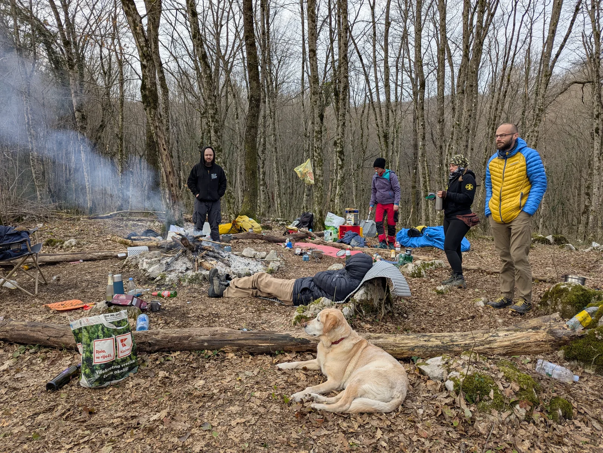

Počelo je! (55. školica SOV)
Riječima starih planinara izlet nije gotov dok izvještaj nije predan, pa evo meni je pripala čast napisati osvrt na prvi izlet 55. speleo škole SOV Velebit. Kako sada od svih misli, doživljaja i događaja napraviti imalo…

Napisao: Stjepan Schönberger
Fotografije: arhiva škole, Ana Marija, Sanja, Roko, petra, Igor, Tibor
Riječima starih planinara izlet nije gotov dok izvještaj nije predan, pa evo meni je pripala čast napisati osvrt na prvi izlet 55. speleo škole SOV Velebit. Kako sada od svih misli, doživljaja i događaja napraviti imalo smislen opis? Evo pokušaja…
Cilj našeg prvog izleta je bio Tounj i posjet špilji u kamenolomu, ali i prije toga odraditi neke od propisanih vježbi (orijentacija, klasične tehnike abseila, prusiciranje, spuštanje po tirolci). Započeli smo susretom kod NSK u subotu 08.03. u 7:30. Tu su se već pojavili prvi problemi, jer jedini caffe bar od milja nazvan Zaspali Konobar nije radio. Nije bilo kave, nije bilo ni puno priče, samo uspavani, blagno namrgođeni pogledi preko Trnja. Podijelili smo se po autima i zaputili prema Tounju i njegovo legendarnoj ustanovi caffe baru Valentino. Svatko je mogao izabrati svoj put do Tounja, pa su neki tako izabrali put prema Rijeci i onda se vraćali preko Vrbovskog i Ogulina do Tounja. Lijep je taj kraj oko Hreljina Ogulinskog.
Brzinska kava, zadnja kupnja zaboravljenih stvari i krećemo opraštajući se od civilizacije. Nakon 2 skretanja i 7 min vožnje bili smo na parkingu ispod mjesta za logor. Nosimo stvari do logorišta i prvi zadatak nam ne pada teško – doručak! Prvi put sam doživio nešto o čemu sam puno puno puta slušao - cerada i sva hrana na nju, pa navali narode. Švedski stol kojeg bi se i dobar hotel postidio, bilo je tu 12 vrsta kobasica, 9 vrsta sira, tortilja, kruha od krumpira do kukuruza, pa namaza od sira, mesa ili povrća, piletine i kuhanih jaja da bi se i sam Uskrs postidio. Da ne zaboravim čvarke, slanine, paprike, žitarice i grožđice, a za slatko kolača razne vrste, svaki dobar za polizat prste.
Nakon jela došli smo i do službenog dijela. Ispred nas je stala Goga i s lopaticom u ruci objasnila nam sve o govnima i njihovom ‘odlaganju’ u prirodi. Naučili smo kolika treba biti rupa, kako nam se sfinkter lakše otvara i da X označava mjesto gdje se ne treba kopati blago. Nakon toga je krenula izrada bivaka – raštrkali smo se kao pioniri divljeg zapada tražeći svoje mjesto pod suncem. Svatko je na svoj način krenuo raditi, pa je bilo tu zanimljivih arhitektonskih rješenja. Na kraju su se umiješali i instruktori koji su nam s riječima iskustva, naše Hiltone pretvarali u potleušice koje će nas ipak držati suhima i toplima.
Krenuli smo zatim s uzlovima, bilo je tu šestica, osmica, dvostrukih osmica, devetki kao na dobrom listiću za loto. Pa bulin, dvostruki bulin, dvostruki križni na zateg, sve su to naši vrijedni prstići pleli, a instruktori uskakali kada bi šestice postojale petice ili devetke desetke, a bulin hrpa užeta. Vidjevši da nam uzlovi dobro idu (ili da smo beznadni) instruktori su nas podijelili u grupe, pa smo krenuli na ostale vježbe. U digitalnoj orijentaciji učili smo kako se izviđa teren (‘rekognosciranje’, za one kojima treba velika riječ za scrabble) i koristili smo mobitel i aplikaciju za učitavanje karte, orijentaciju, snimanje tragova, bilježenje točaka i slanje krajnjih rezultata. Sljedeće je bio ‘old school’ pristup orijentaciji, pa smo koristili kartu i kompas da se krećemo po terenu i obilazimo kontrolne točke.
Nakon što smo uspješno našli put nazad slijedeća nas je vježba naučila kako od zamke i karabinera napraviti priručni pojas, istina neudoban, ali izvrstan za korištenje u nedostatku pravog. S improviziranim pojasom smo prusicirali – bilo je tu ‘puf pant joj’, ali do grane bi se popeli, pa se isto tako i spustili. Nastavili smo zatim s klasičnim tehnikama abseila, počevši od dilfera (Dülfera) – to je ona tehnika u kojoj uže stavljate između nogu i oko sebe da stvorite trenje, pa se kontrolirano spuštate niz nagnut ili vertikalan teren. To je i ista ona tehnika zbog koje će jajca završit u krajnicima, a glas će vam bit par oktava viši 😊. Slijedeće je bio ‘Francuz’, gdje smo ruke omotali užetom i poput Krista spasitelja iznad Rio de Janeiroa silazili niz kosinu.
Kada smo savladali ove tehnike smjeli smo koristiti i spravicu - stop descender. Prvo staru, pa noviju verziju tako da se upoznamo s obje. Učili smo da nekad descenderi malo i cure, moj nije curio više je tekao, pa je dobrodošlo i učenje kako se blokira. Nakon spravica koristili smo i karabiner u koji smo upleli polulađarac i na taj se način spuštali. Tijekom svih ovih vježbi dodatno smo bili osigurani užetom preko tijela, što je osim povećane sigurnosti doprinijelo vježbanju uzlova (bulin, osiguravajući, polulađarac). Kao šećer na kraju spuštali smo se po Tirolskoj prečnici poznatijoj kao Tirolka, a puku prepoznatom kao Zip line. Nakon uspješnih vježbi i napornog dana pristupili smo švedskom stolu i uživali u raznim delicijama. Večer je završila sjedenjem uz vatru i pjevanju kako poznatih hitova tako i izvrsnih prepjeva sa špiljarskom tematikom autora i izvođača našeg voditelja Ede. Dugo bismo još pratili Edu na gitari, ali valjalo je sutra u špilju pa smo se povukli u svoje bivke na počinak.
Osvanuo je drugi, dugoočekivani dan. Polako smo ispuzali iz bivaka kao medvjedi iz zimskog sna. Doručkovali smo, spremili se, ponovo se spremili, doručkovali, popili kavu, opet spremili, kao da smo bili dosta uzbuđeni onim što nam slijedi. Prvo smo naučili nešto o karabitkama, nekada korištenim (čak i ne tako davno) plinskim lampama u speleologiji. Zanimljivo je bilo vidjeti što su ljudi nekada koristili, s čim su se borili dok mi danas pritisnemo tipku i dođe svjetlo! (ili ne dođe ako zaboraviš baterije?!)
Dalibor (Paar), naš vodič za špilju nas je upoznao s planom i poveo do kamenoloma. Pod punom opremom i uzbuđeni poput smogovaca prešli smo kamenolom do prvog ulaza. Ovdje nas je Dalibor upoznao s poviješću špilje od otkrića do danas. Žalosno je bilo čuti kako je radom kamenoloma urusavanjem doslo do zatrpavanja koje je moglo znaciti gubitak ovako značajnog speleološkog objekta. Srećom otvorio se iz istog razloga i novi ulaz kroz koji cemo i mi uci. Prvi pogled na ulaz ne ulijeva bas povjerenje, jer izgleda dosta usko, pa čovjek požali što je uživao u onom švedskom stolu ranije. Nakon završnih uputa o sigurnosti i kretanju polako u grupama s instruktorima ulazimo.
Čim se prođe ulaz shvatite da ste ušli u posve novi svijet, odmah kreće malo provlačenja, a nakon toga se otvara prostor i spuštamo se po siparu sve niže i niže. Krećemo se polako i pratimo osobu ispred pa ne možemo baš ni pojmiti cijeli prostor oko nas, a prostor oko nas je fantastičan! Vrlo brzo shvaćamo da se u speleologiji krećemo na sve moguće načine uporabom svih mogućih dijelova tijela…doista svih! Penjemo se, priječimo, preskačemo, otpenjavamo, spuštamo se kao na toboganu. Svega ima. Dolazimo do jezera kod Oltara. Ovdje smo se ugodno smjestili, utihnuli i ugasili svjetla. Poseban je osjećaj ostati u potpunom mraku i tišini u kojoj do nas dopire samo tiho kapanje vode. Uzbuđeni kakvi jesmo bili, izdržali smo minutu biti u tišini. Nakon što smo pojeli par sitnica; suhih bana, brusnice, indijskih oraščića, čokolade s kavom, tamne čokolade s malinama i sl. (dakle, više manje sve što smo ponijeli), krećemo natrag prema izlazu, ali ne istim putem. Postoji paralelni put koji će nas dovesti do pred izlaz (nismo ga ni primijetili dok smo prošli pored njega). Na povratku nas je čekalo još jedno iznenađenje – posjet Mamutovom jezeru! Malo gore, dolje, lijevo, desno i pred nama se pojavilo nešto nevjerojatno - gumeni čamac i admiral Darko. Naime osim što smo mogli uživati u pogledu na veliko podzemno jezero mogli smo svjedočiti i tehnici kretanja podzemnim vodenim površinama. Zadržali smo se neko vrijeme uz jezero, uz mogućnost vožnje čamcem da se uvježba siguran (i suh) ulazak u čamac i obilazak jezera istražujući dodatne prolaze.
U grupama se počinjemo kretati prema izlazu, zanimljivo je bilo prolaziti prostorom kroz koji smo prolazili prije pol sata, a kladili bismo se da nikada ovdje nismo bili! Nakon nekih 4.5 sata izlazimo ponovo na površinu, uživamo u plavom nebu, žarkom suncu i dojmovima špilje.
Vraćamo se sretni i ponosni u kamp gdje sliježemo dojmove i rušimo vrijedno sagrađene bivke, kupimo sve stvari tako da ne ostavimo ništa iza sebe i slušamo završnu Edinu riječ.
Time je i službeno završio naš prvi izlet, koji ćemo sigurno pamtiti po upoznavanju tehnika, nas međusobno, ali i nas samih u dubinama špilje u kamenolomu Tounj!
Hvala Edi, instruktorima i svim školarcima, vidimo se u sljedećem nastavku….